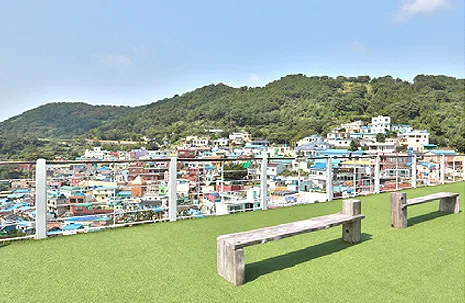
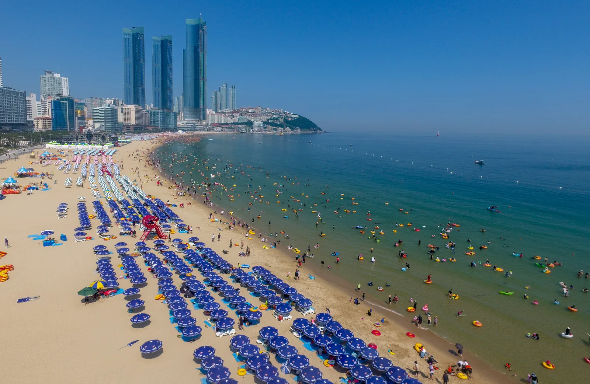
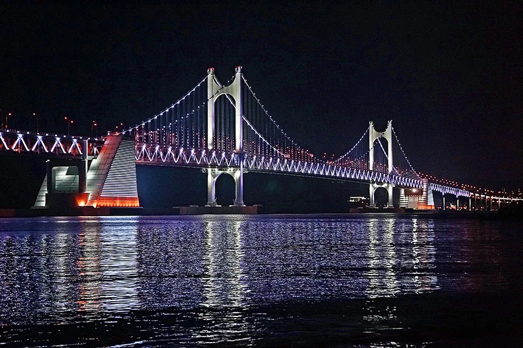
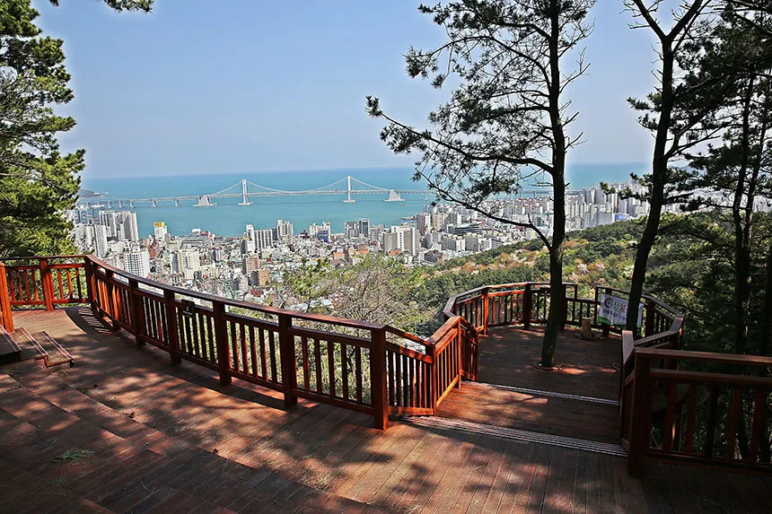

▲ 감천문화마을. 파스텔톤 집들이 계단식으로 늘어선 부산의 대표 명소다 ⓒ 부산 사하구청
부산 여행에서 빠지지 않는 세 곳, 감천문화마을·해운대·광안리는 각각 접근 방식이 다르다. '가볼만한곳' 목록만 보고 출발했다가는 주차 때문에 하루 일정이 꼬일 수 있다.

▲ 감천문화마을 전망대에서 바라본 전경. 좁은 골목길 특성상 감정초등학교 공영주차장(만차 시 감천2공영주차장) 이용 후 도보 이동이 기본이다 ⓒ 부산 사하구청
1. 감천문화마을 — 골목은 좁고, 버스는 편해졌다
산자락을 따라 계단식으로 늘어선 감천문화마을은 미로 같은 골목길이 매력이지만, 그만큼 차량 진입에는 제약이 많다. 방문 시에는 감정초등학교 공영주차장을 우선 이용하고, 이곳이 만차라면 인근 감천2공영주차장을 대안으로 이용한 뒤 도보로 이동하는 것이 기본이다. 특히 주말은 오전 10시 이후 두 주차장 모두 조기 만차되는 경우가 잦아 이른 시간대 방문이 유리하다. 2025년 7월 5일 부산 시내버스 전면개편으로 61번 버스(운수사는 대도운수로 변경)가 마을 입구까지 들어오게 되면서, 자차와 대중교통을 병행하는 동선도 한결 수월해졌다.
2. 해운대 — 대한민국 대표 해변의 숙제, 주차

▲ 해운대 해변 성수기 풍경. 파라솔과 인파로 빼곡히 채워진 백사장에서 주차장까지 확보하려면 여유 있는 일정이 필요하다 ⓒ 해운대구청
해운대는 매년 수많은 관광객이 찾는 대한민국 대표 해변이다. 그만큼 성수기에는 해변 인근 주차장이 빠르게 채워지는 경우가 많다. 해변 바로 앞 주차를 고집하기보다, 도보 10~15분 거리의 대체 주차장까지 넓게 염두에 두고 동선을 짜는 것이 현실적이다.
3. 광안리 — 야경과 맛집, 그리고 주차 경쟁

▲ 야간 조명이 켜진 광안대교. 해가 진 뒤 야경을 즐기려는 방문객이 몰리면서 저녁 시간대 주차 경쟁이 치열해진다 ⓒ 부산 수영구청
광안리는 조개구이·대구탕·즉석 떡볶이 등 먹거리와 함께 야경 명소로도 인기가 높다. 저녁 시간대 방문객이 몰리는 만큼, 해가 지기 전 여유 있게 도착해 주차 공간을 확보하는 것이 야경까지 편안하게 즐기는 방법이다.
4. 세 곳을 하루에 묶는다면

▲ 부산 전망대에서 내려다본 해안 전경. 세 곳 모두 서로 다른 방향에 흩어져 있어 동선을 미리 정해야 이동 시간을 아낄 수 있다 ⓒ 부산 수영구청
동선 팁
- 감천문화마을은 오전~이른 오후에 방문해 골목 그림자를 피하는 것이 사진 찍기에도 유리하다.
- 해운대는 낮 시간대, 광안리는 일몰 전후 방문으로 시간대를 나누면 주차 경쟁을 분산시킬 수 있다.
- 세 곳 모두 대중교통 병행 동선을 함께 고려하면 주차 스트레스를 줄일 수 있다.
5. 정리
체크포인트
- 감천문화마을은 감정초등학교 공영주차장(만차 시 감천2공영주차장) + 도보가 기본 동선이다.
- 2025년 버스 개편으로 61번이 마을 입구까지 연장됐다.
- 해운대·광안리는 성수기 주차난을 감안해 대체 주차장을 미리 파악하자.
- 세 곳을 하루에 돌려면 시간대를 나눠 주차 경쟁을 분산시키는 것이 유리하다.